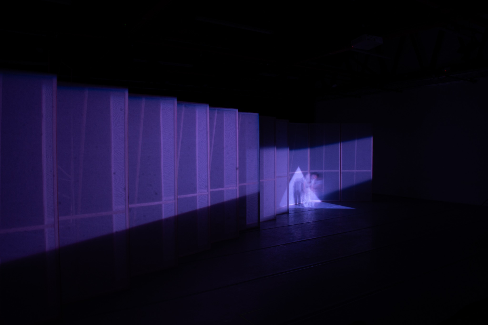
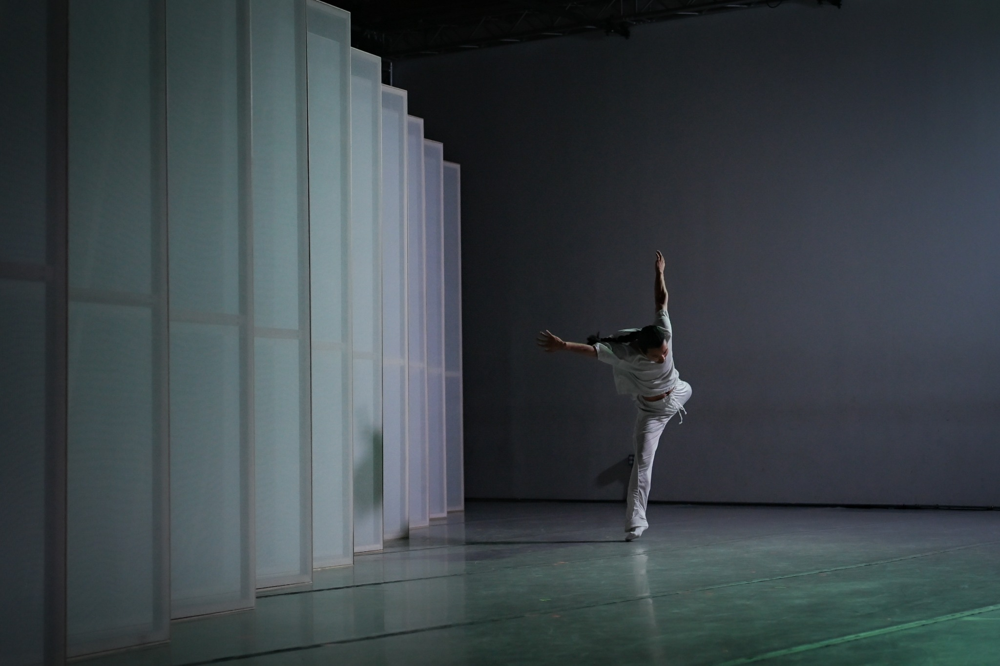
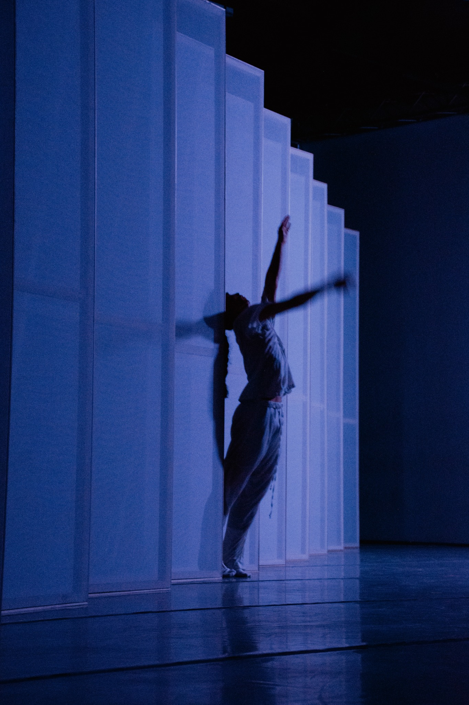
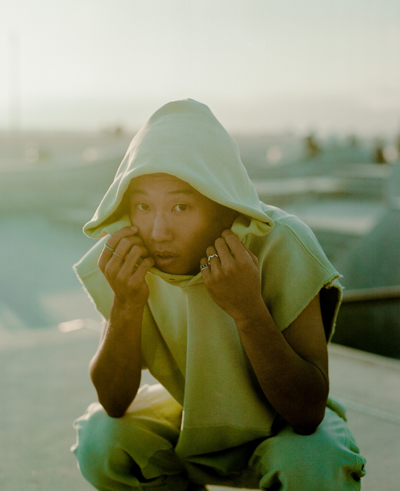

dancer / choreographer
Los Angeles
Los Angeles

WALL—BODY · with Hiroshi Kaneko
now & upcoming
/ work
selected works
solo performance / architecture
WALL—BODY
A solo performance made with movable walls. The body tries to pass, lean, hide, and reach through an architecture that keeps changing.


solo performance / object work
SHU LOVES CHAIRS: a piece about support
A solo made with chairs. It begins with a simple question of support: who gives it, who receives it, and what happens when support becomes unstable.
work in development
Waiting for the Season to Pass
A performance installation in development, set inside an artificial winter. A body remains with snow, objects, and time, waiting for a season to pass.
site-responsive performance
A Celebration For Longing
A site-responsive performance at Union Station. A salaryman-like figure moves through public space, loneliness, ritual, and longing.
performance
A Guidance to Get Lost
A short work about searching for direction and becoming trapped by the guidance itself.
choreography / projects
2026
WALL—BODY
LADP Presents. With architect Hiroshi Kaneko.
SYNOPTICO
Dance and projection. Directed by ENO.
2025
A Celebration For Longing
L.A. Dance Project Gala, Union Station, Los Angeles.
WALL—BODY (in process)
With architect Hiroshi Kaneko.
To Knot
Everybody Dance LA! Summer Intensive, LA Dance Project.
2024
SHU LOVES CHAIRS: a piece about support
Solo show. WAKAWAKA Warehouse, Los Angeles.
Untitled (This Could Be You)
Work in progress. LA Dance Project.
An Evening of Dance and Music
With Janie Taylor. Amargosa Opera House, Death Valley.
2023
Improvisational Duets
God's True Cashmere × Nick Fouquet. Just One Eye, Los Angeles. With Nayomi Van Brunt.
A Guidance to Get Lost
Just One Eye, Los Angeles.
2018
Enclosure
Mayumi Kinouchi Ballet Studio, Kanagawa.
Duet
Mayumi Kinouchi Ballet Studio, Kanagawa.
Buoyant
REACH, Houston Ballet.
2017
Input / Output
REACH Project, Houston Ballet.
collaborations / performance
2025
NEST
Chor. Rauf "Rubberlegz" Yasit. CONGRESS XII.
Creative Lead, Everybody Dance LA! Summer Intensive
LA Dance Project.
2024
PhotoVogue
Portrait by Dan Chan. Vogue Italia.
A Ballet Through Mud as Buddha
By RZA and Platoon. Chor. Yusha Marie Sorzano.
SHU (周)
Experimental film. Dir. Mike Schwartz. LA Dance Film Festival.
2020–
Dancer, L.A. Dance Project
Artistic Director Benjamin Millepied. Los Angeles.
/ about
he / him

Shu Kinouchi is a Japanese dancer and choreographer based in Los Angeles. His work places the body in direct relationship with objects and architecture, asking how support is given, refused, or transformed.
Kinouchi has performed with L.A. Dance Project since 2020, and previously danced with Houston Ballet and Tulsa Ballet. He trained at Hamburg Ballet School and the Jacqueline Kennedy Onassis School at American Ballet Theatre.
His recent works include WALL—BODY, created with architect Hiroshi Kaneko, and SHU LOVES CHAIRS: a piece about support, created with designer Shin Okuda of WAKAWAKA.
/ press
choreography / works
LA Dance Chronicle
2026
2026
Fjord Review
2026
2026
performance
Los Angeles Dance Review
2024
2024
LA Dance Chronicle
2024
2024
LA Dance Chronicle
2024
2024
Los Angeles Dance Review
2024
2024
LA Dance Chronicle
2024
2024
Stage and Cinema
2023
2023
ShoutOut LA
2024
2024
Houston Press
2018
2018
Houston Press
2016
2016
Baryshnikov Arts Center
2025
2025
features / mentions
Los Angeles Times
2026
2026
The New York Times
2024
2024
Los Angeles Works to Build Its Dance Muscles
The New York Times
2024
2024
Love and Death in Paris
The New York Times
2022
2022
Review: L.A. Dance Project Celebrates Female Choreographers
The New York Times
2022
2022
Pierre Boulez Was a Titan of 20th Century Music. What About Now?
The New York Times
2025
2025
Dance breathes life into L.A. Dance Project's 10-year anniversary gala
Los Angeles Times
2022
2022
We interrupt your week to bring you the L.A. Dance Project serving looks
Los Angeles Times
2022
2022
How a recurring dream informed choreographer Jamar Roberts' new work
Los Angeles Times
2023
2023
The Guardian
2024
2024
Cameraman and a random seagull are the stars of this love letter to the Opera House
Sydney Morning Herald
2024
2024
Benjamin Millepied propose une relecture judicieuse de Roméo et Juliette
Le Monde
2022
2022
Le chorégraphe: Benjamin Millepied
Vogue France
2022
2022
Benjamin Millepied's L.A. Dance Project Celebrates 10-Year Anniversary
Hollywood Reporter
2022
2022
L.A. Dance Project's Romeo and Juliet Suite
Time Out
2024
2024
L.A. Dance Project's 2024 Gala Spotlights the Company's Collaborative Spirit
C Magazine
2024
2024
An Ode to Lynch and Los Angeles
Flaunt
2026
2026
L.A. Dance Project Celebrates 10-Year Anniversary Gala
Cultured
2022
2022
Best of the West 2024
Dance Informa
2024
2024
Best of Dance 2023
Fjord Review
2023
2023
/ presenting
Shu’s work can be presented in theaters, galleries, studios, and other spaces. Current pieces include WALL—BODY and object-based solo works. For presenting, residency, teaching, or collaboration inquiries, please contact Shu.
/ contact
email
social
based in
Los Angeles, California